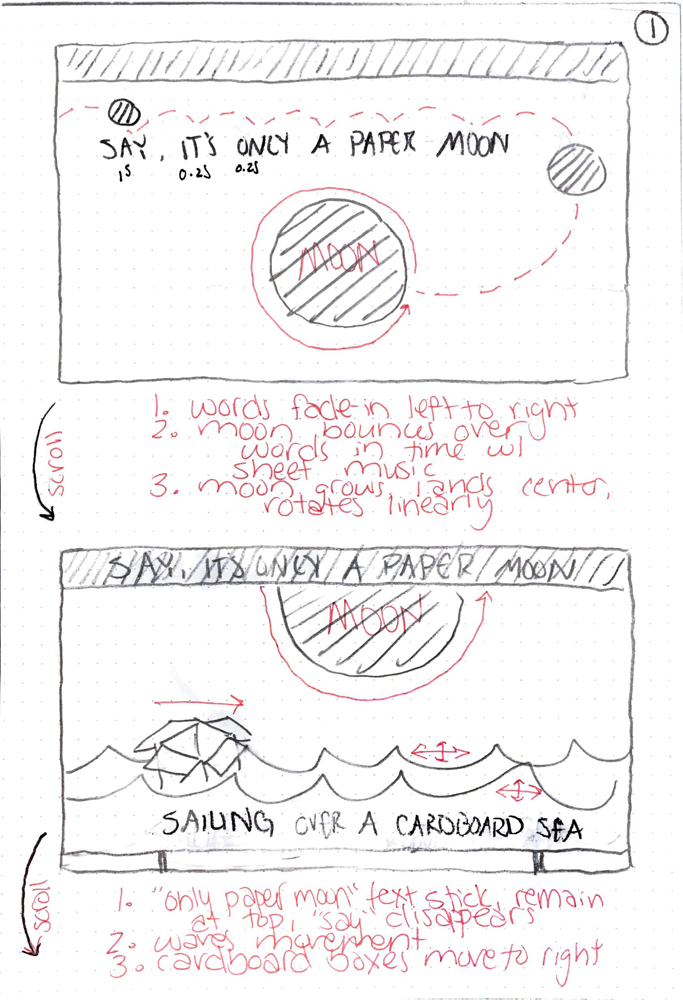
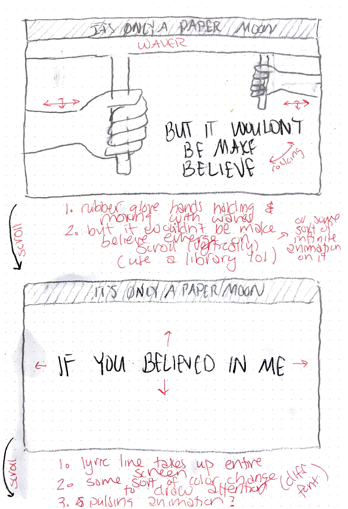
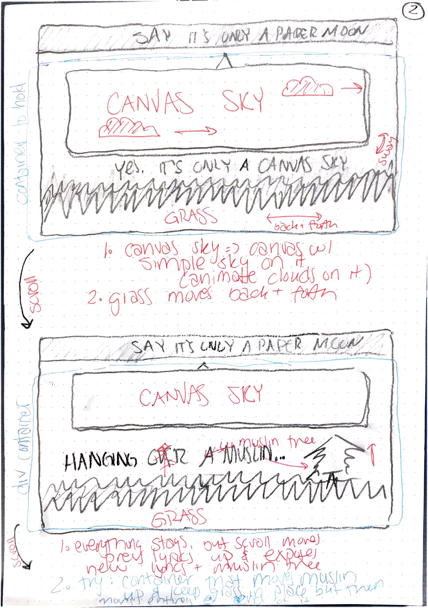
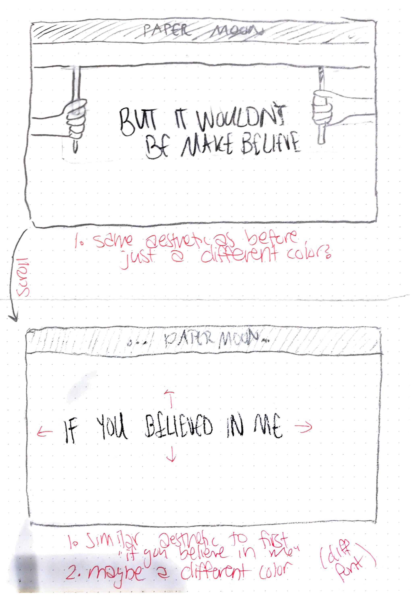
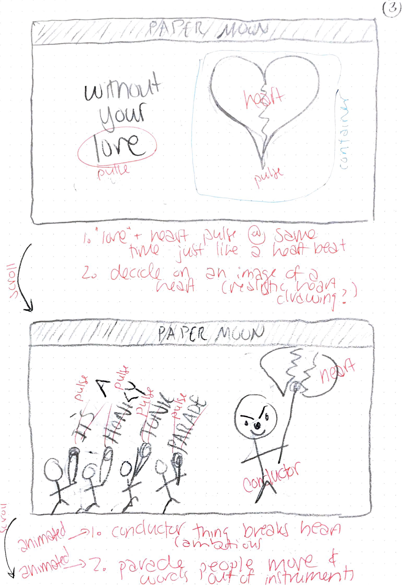
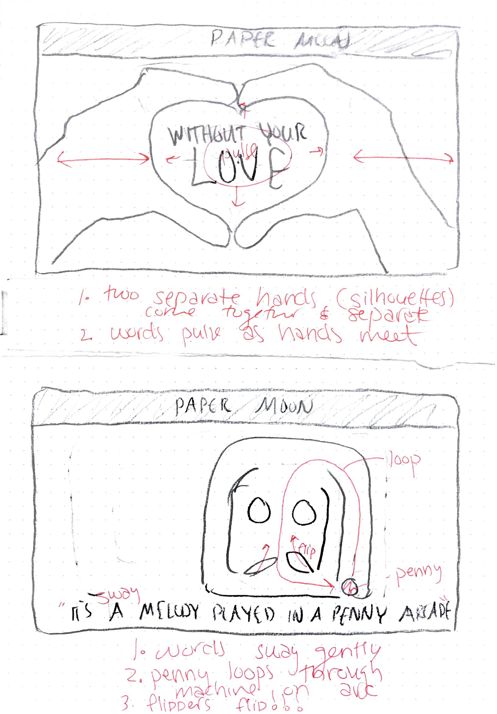
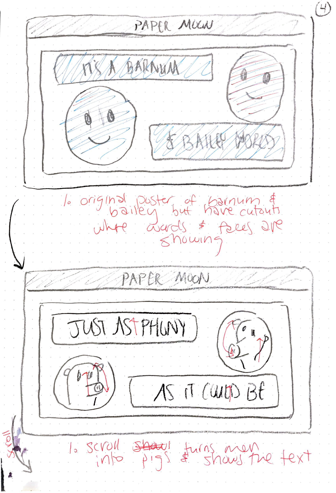
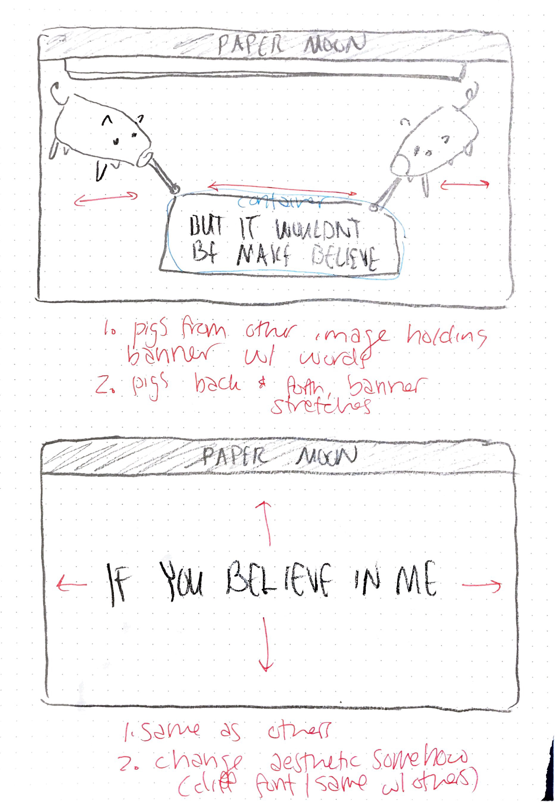
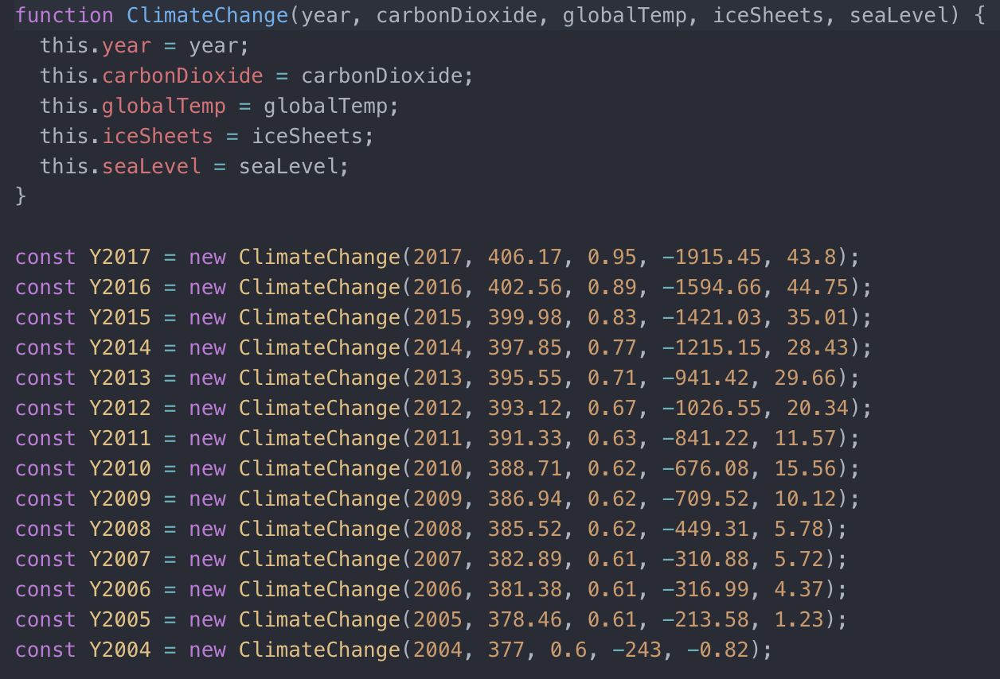
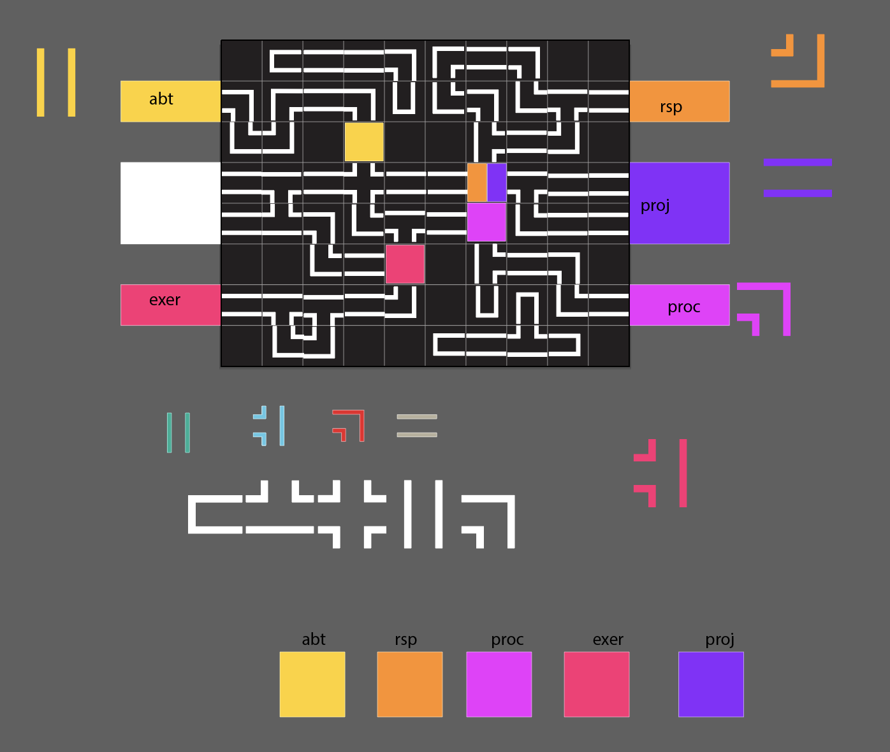

PROCESSES
This project began with some sketches laying out the different elements for each verse that was to be worked on. This helped in deciding spacing and conceptualization. The original sketches are found below.








The final iteration of the project different massively from this to allow for different screen sizes as the original did not function correctly on any screen size other than the one it was originally built with.
The final page works solely for desktop pages but utilizes for different grid components which are separately scrollable and represent one of the four verses.
This project utilized different clickbait-like images to evoke the aesthetic of a traditional clickbait image. The 6 images used throughout the piece are found below.
This project comes to life with the technical bases where the different clickbait elements pop-up on the screen, pulse, and move. These technicals were developed as the project was in development, so there are not any relavent documentation.
The background news-page was built randomly at the end with different grid elements and scrolling abilities. Inspiration was drawn from random news sites and the images and titles were contrived randomly.
Little documentation of this project is available because of the drastic change it underwent. Originally designed to display lines going across the screen representing the data points, the conception was built on the user scrolling along the
x-axis. There was a sketch of this, but it was sadly lost.
The current iteration, though, utilizes grid elements as well as draggable elements to represent the data. This data was collected from NASA's database and input directly as rudimentary JavaScript objects. The image of this can be found below.

Because of the drastic change, the product was designed along the entire process. Hence, little to no documentation for the entire process can be found.
The final project (this webpage you are navigating through currently) was aimed to compile all of the work done in the class into a single website.
The entire process began with extremely rudimentary sketches and took inspiration from traditional pipe-connection games. The general aesthetic was to match that of older interfaces. The beginning sketches and inspiration images are found
below.
The layout of the landing page was conceptualized in Adobe Illustrator to help in determining the necessary layout of the page as well as all of the necessary elements to create the entire page. An image of the working Illustrator file can be
seen below.
